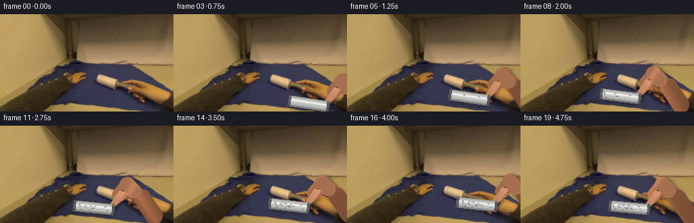
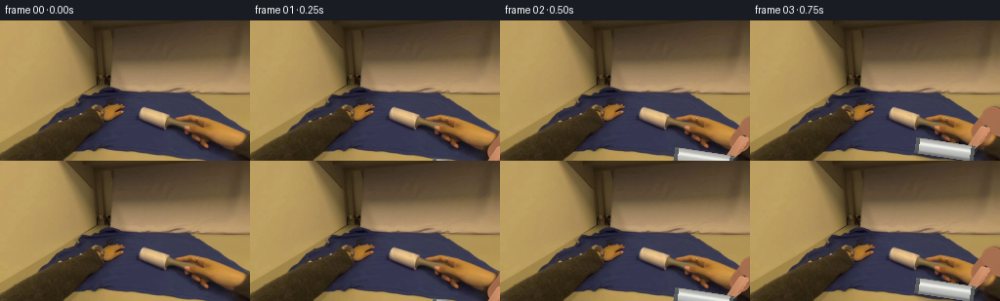
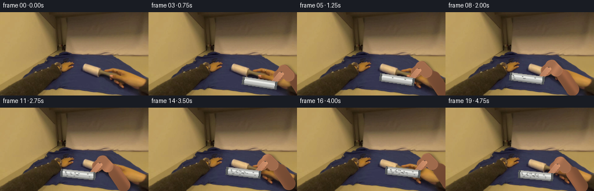
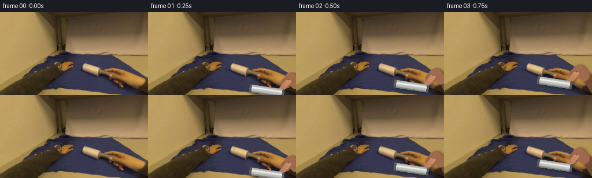

CODING AGENTS AS PIXEL WORLD MODELS
traex/DeepSeek-V4.1-Flash · common50_0015
点击播放 · 原生 RGB 像素
逐轮保存的候选
回放视频、检查图与代码变化。
每份候选均可单独播放。实际图片检查记录在下方工具轨迹中。
候选 01播放与检查图
点击播放 · 原生 RGB 像素


展开代码变化
--- 上一保存版本
+++ 本次保存版本
@@ -0,0 +1,430 @@
+from pathlib import Path
+
+import cv2
+import numpy as np
+from PIL import Image, ImageDraw, ImageFilter
+
+import artifact_io
+
+
+CASE_DIR = Path(__file__).resolve().parent
+WIDTH, HEIGHT = 256, 144
+FRAME_COUNT = 20
+FPS = 4
+SUPERSAMPLE = 4
+
+# The stroke begins at the right side of the shirt and makes one broad pass
+# to the left, then rolls back toward the starting side.
+ROLLER_KEYS = [
+ (222.0, 164.0),
+ (216.0, 153.0),
+ (208.0, 142.0),
+ (199.0, 132.0),
+ (190.0, 125.0),
+ (180.0, 123.0),
+ (169.0, 122.0),
+ (158.0, 121.0),
+ (147.0, 121.0),
+ (136.0, 121.0),
+ (131.0, 122.0),
+ (138.0, 121.0),
+ (148.0, 120.0),
+ (159.0, 119.0),
+ (170.0, 118.0),
+ (181.0, 117.0),
+ (191.0, 116.0),
+ (183.0, 118.0),
+ (172.0, 119.0),
+ (160.0, 121.0),
+]
+
+
+def smoothstep(a, b, x):
+ t = np.clip((x - a) / (b - a), 0.0, 1.0)
+ return t * t * (3.0 - 2.0 * t)
+
+
+def bezier(p0, p1, p2, t):
+ p0, p1, p2 = (np.asarray(p, dtype=np.float32) for p in (p0, p1, p2))
+ return (1.0 - t) ** 2 * p0 + 2.0 * (1.0 - t) * t * p1 + t**2 * p2
+
+
+def shirt_mask(image):
+ rgb = image.astype(np.float32)
+ r, g, b = rgb.transpose(2, 0, 1)
+ score = b - 0.5 * (r + g)
+ mask = ((score > 7.0) & (b > 38) & (b > r * 1.08)).astype(np.uint8)
+
+ roi = np.zeros((HEIGHT, WIDTH), np.uint8)
+ cv2.ellipse(roi, (154, 121), (104, 54), -5, 0, 360, 1, -1)
+ mask &= roi
+ mask = cv2.morphologyEx(mask, cv2.MORPH_CLOSE, np.ones((5, 5), np.uint8))
+ mask = cv2.morphologyEx(mask, cv2.MORPH_OPEN, np.ones((3, 3), np.uint8))
+
+ count, labels, stats, _ = cv2.connectedComponentsWithStats(mask)
+ if count > 1:
+ main = 1 + int(np.argmax(stats[1:, cv2.CC_STAT_AREA]))
+ mask = (labels == main).astype(np.uint8)
+ mask = cv2.dilate(mask, np.ones((3, 3), np.uint8), iterations=1)
+ return mask.astype(np.float32)
+
+
+def make_canvas():
+ return Image.new("RGBA", (WIDTH * SUPERSAMPLE, HEIGHT * SUPERSAMPLE), (0, 0, 0, 0))
+
+
+def points_scaled(points):
+ return [(float(x) * SUPERSAMPLE, float(y) * SUPERSAMPLE) for x, y in points]
+
+
+def draw_capsule(draw, p0, p1, radius, fill):
+ x0, y0 = (float(v) * SUPERSAMPLE for v in p0)
+ x1, y1 = (float(v) * SUPERSAMPLE for v in p1)
+ r = float(radius) * SUPERSAMPLE
+ draw.line([(x0, y0), (x1, y1)], fill=fill, width=max(1, int(round(2 * r))))
+ draw.ellipse((x0 - r, y0 - r, x0 + r, y0 + r), fill=fill)
+ draw.ellipse((x1 - r, y1 - r, x1 + r, y1 + r), fill=fill)
+
+
+def draw_polygon(draw, points, fill):
+ draw.polygon(points_scaled(points), fill=fill)
+
+
+def layer_to_array(layer):
+ return np.asarray(
+ layer.resize((WIDTH, HEIGHT), Image.Resampling.LANCZOS), dtype=np.float32
+ ) / 255.0
+
+
+def soft_shadow(alpha, radius=2.0, opacity=0.5):
+ blurred = cv2.GaussianBlur(alpha, (0, 0), radius)
+ return np.clip(blurred * opacity, 0.0, 1.0)
+
+
+def contact_geometry(center, angle, length=61.0, radius=8.2):
+ center = np.asarray(center, dtype=np.float32)
+ axis = np.array([np.cos(angle), np.sin(angle)], dtype=np.float32)
+ normal = np.array([-axis[1], axis[0]], dtype=np.float32)
+ left = center - axis * (length * 0.5 - radius)
+ right = center + axis * (length * 0.5 - radius)
+ return center, axis, normal, left, right
+
+
+def draw_handle_and_arm(base, center, angle, frame_index, contact_amount):
+ center, axis, normal, left, right = contact_geometry(center, angle)
+ handle_dir = np.array([0.54, -0.842], dtype=np.float32)
+ handle_base = center + axis * 26.0 + normal * 1.1
+ handle_end = handle_base + handle_dir * 28.0
+ wrist = handle_base + handle_dir * 47.0
+ elbow = wrist + np.array([38.0, 48.0], dtype=np.float32)
+
+ # Shadow of arm/handle is rendered before the tool itself.
+ shadow_layer = make_canvas()
+ sd = ImageDraw.Draw(shadow_layer)
+ draw_capsule(sd, handle_base + (2.4, 2.4), handle_end + (2.4, 2.4), 4.2, (20, 16, 15, 175))
+ draw_capsule(sd, wrist + (3.0, 3.2), elbow + (3.0, 3.2), 11.5, (18, 14, 13, 150))
+ shadow = layer_to_array(shadow_layer)
+ shadow_alpha = soft_shadow(shadow[:, :, 3], 2.2, 0.62)
+ tint = np.array([17.0, 14.0, 13.0], dtype=np.float32)
+ base[:] = base * (1.0 - shadow_alpha[:, :, None]) + tint * shadow_alpha[:, :, None]
+
+ # Forearm with a tapered silhouette and directional skin shading.
+ arm_layer = make_canvas()
+ ad = ImageDraw.Draw(arm_layer)
+ curve = [wrist + np.array([0.0, 0.0], np.float32)]
+ curve.append(bezier(wrist, wrist + (24.0, 22.0), elbow, 0.48))
+ curve.append(elbow)
+ draw_capsule(ad, curve[0], curve[1], 9.3, (176, 116, 81, 255))
+ draw_capsule(ad, curve[1], curve[2], 13.0, (169, 107, 73, 255))
+ draw_capsule(ad, wrist + (-1.0, 2.5), wrist + (9.0, 11.0), 9.8, (184, 123, 87, 255))
+
+ arm = layer_to_array(arm_layer)
+ arm_alpha = arm[:, :, 3]
+ yy, xx = np.mgrid[0:HEIGHT, 0:WIDTH].astype(np.float32)
+ arm_u = np.clip((xx - 202.0) / 64.0 + (yy - 90.0) / 110.0, 0.0, 1.0)
+ arm_v = np.clip(((xx - 204.0) * 0.82 - (yy - 93.0) * 0.57) / 16.0, -1.0, 1.0)
+ arm_shade = 0.84 + 0.17 * np.exp(-((arm_v + 0.28) / 0.47) ** 2)
+ arm_shade *= 0.88 + 0.12 * (1.0 - arm_u)
+ arm_rgb = arm[:, :, :3] * 255.0 * arm_shade[:, :, None]
+ arm_rgb += np.array([13.0, 7.0, 4.0], dtype=np.float32) * (
+ np.exp(-((arm_v + 0.52) / 0.19) ** 2)[:, :, None]
+ )
+
+ # Palm back is an elongated rounded form aligned with the forearm.
+ palm_layer = make_canvas()
+ pd = ImageDraw.Draw(palm_layer)
+ palm_a = wrist + (-1.0, 2.0)
+ palm_b = handle_end + (-3.0, 1.0)
+ draw_capsule(pd, palm_a, palm_b, 10.4, (178, 117, 82, 255))
+ draw_capsule(pd, palm_a + (-1.0, 0.0), palm_a + (8.0, 9.0), 10.8, (184, 123, 88, 255))
+ palm = layer_to_array(palm_layer)
+ palm_alpha = palm[:, :, 3]
+ palm_v = np.clip(((xx - 199.0) * 0.83 + (yy - 89.0) * 0.56) / 11.0, -1.0, 1.0)
+ palm_shade = 0.91 + 0.15 * np.exp(-((palm_v + 0.22) / 0.46) ** 2)
+ palm_rgb = palm[:, :, :3] * 255.0 * palm_shade[:, :, None]
+
+ base[:] = base * (1.0 - arm_alpha[:, :, None]) + arm_rgb * arm_alpha[:, :, None]
+ base[:] = base * (1.0 - palm_alpha[:, :, None]) + palm_rgb * palm_alpha[:, :, None]
+
+ # Dark rubber grip.
+ handle_layer = make_canvas()
+ hd = ImageDraw.Draw(handle_layer)
+ draw_capsule(hd, handle_base, handle_end + handle_dir * 2.0, 3.8, (51, 54, 55, 255))
+ draw_capsule(hd, handle_base - handle_dir * 2.0, handle_base + handle_dir * 8.0, 5.0, (65, 68, 68, 255))
+ handle = layer_to_array(handle_layer)
+ handle_alpha = handle[:, :, 3]
+ hq = ((xx - handle_base[0]) * -handle_dir[1] + (yy - handle_base[1]) * handle_dir[0]) / 4.0
+ handle_shade = 0.66 + 0.48 * np.exp(-((hq + 0.22) / 0.35) ** 2)
+ handle_rgb = handle[:, :, :3] * 255.0 * handle_shade[:, :, None]
+ base[:] = base * (1.0 - handle_alpha[:, :, None]) + handle_rgb * handle_alpha[:, :, None]
+
+ # Fingers wrap over the grip, with separate knuckles and warm rim light.
+ fingers_layer = make_canvas()
+ fd = ImageDraw.Draw(fingers_layer)
+ along = np.array([0.42, 0.907], dtype=np.float32)
+ across = np.array([0.842, -0.54], dtype=np.float32)
+ finger_colors = [
+ (197, 137, 100, 255),
+ (194, 133, 96, 255),
+ (188, 126, 90, 255),
+ (181, 118, 84, 255),
+ ]
+ for index, color in enumerate(finger_colors):
+ root = handle_end - handle_dir * (2.0 + index * 4.6) + across * 5.3
+ tip = root - across * 10.6 + along * (1.2 if index % 2 else -0.4)
+ draw_capsule(fd, root, tip, 2.9, color)
+ knuckle = root * 0.52 + tip * 0.48
+ draw_capsule(fd, knuckle, knuckle + across * 1.8, 2.1, (211, 151, 111, 220))
+
+ # Thumb runs diagonally over the top of the grip.
+ thumb0 = palm_b + np.array([2.0, -2.0], dtype=np.float32)
+ thumb1 = handle_base + np.array([-2.0, -1.0], dtype=np.float32)
+ draw_capsule(fd, thumb0, thumb1, 4.1, (202, 141, 104, 255))
+ draw_capsule(fd, thumb1 + (1.0, 0.5), thumb1 + (-1.0, 4.0), 3.1, (218, 159, 118, 255))
+ fingers = layer_to_array(fingers_layer)
+ fingers_alpha = fingers[:, :, 3]
+ finger_light = 0.94 + 0.12 * np.exp(-((xx - handle_end[0] - 2.0) / 10.0) ** 2)
+ fingers_rgb = fingers[:, :, :3] * 255.0 * finger_light[:, :, None]
+ base[:] = base * (1.0 - fingers_alpha[:, :, None]) + fingers_rgb * fingers_alpha[:, :, None]
+
+ return {
+ "center": center,
+ "axis": axis,
+ "normal": normal,
+ "left": left,
+ "right": right,
+ "handle_base": handle_base,
+ "handle_end": handle_end,
+ "wrist": wrist,
+ }
+
+
+def draw_roller(base, center, angle, frame_index, motion, contact_amount):
+ center, axis, normal, left, right = contact_geometry(center, angle)
+ radius = 8.2
+
+ # The roller's dark contact line and soft fabric shadow.
+ shadow_layer = make_canvas()
+ sd = ImageDraw.Draw(shadow_layer)
+ draw_capsule(sd, left + normal * 6.8, right + normal * 6.8, 5.2, (15, 15, 16, 190))
+ shadow = layer_to_array(shadow_layer)
+ shadow_alpha = soft_shadow(shadow[:, :, 3], 2.5, 0.46)
+ base[:] = base * (1.0 - shadow_alpha[:, :, None]) + np.array(
+ [20.0, 19.0, 21.0], dtype=np.float32
+ ) * shadow_alpha[:, :, None]
+
+ # Rasterize the cylinder analytically for a clean, low-resolution 3D read.
+ yy, xx = np.mgrid[0:HEIGHT, 0:WIDTH].astype(np.float32)
+ rel_x = xx - center[0]
+ rel_y = yy - center[1]
+ s = rel_x * axis[0] + rel_y * axis[1]
+ q = (rel_x * normal[0] + rel_y * normal[1]) / radius
+ half = 61.0 * 0.5
+ body = (np.abs(s) <= half) & (np.abs(q) <= 1.0)
+ edge_aa = np.clip((1.0 - np.abs(q)) * radius + 0.65, 0.0, 1.0)
+ end_aa = np.clip((half - np.abs(s)) + 0.65, 0.0, 1.0)
+ alpha = body.astype(np.float32) * np.minimum(edge_aa, end_aa)
+
+ # Longitudinal adhesive-sheet banding rotates across the cylinder.
+ roll_phase = frame_index * 0.72 + motion * 0.34
+ band = 0.5 + 0.5 * np.sin(4.7 * np.pi * q + roll_phase)
+ band = smoothstep(0.25, 0.78, band)
+ diffuse = np.sqrt(np.clip(1.0 - q * q, 0.0, 1.0))
+ highlight = np.exp(-((q + 0.28) / 0.25) ** 2)
+ rim = np.exp(-((q - 0.78) / 0.18) ** 2)
+ intensity = 0.50 + 0.36 * diffuse + 0.23 * highlight - 0.16 * rim
+ intensity += 0.035 * (band - 0.5)
+ intensity *= 1.0 - 0.10 * smoothstep(0.86, 1.0, np.abs(s) / half)
+ cylinder_rgb = np.stack(
+ [221.0 * intensity, 221.0 * intensity, 216.0 * intensity], axis=-1
+ )
+ cylinder_rgb += np.array([5.0, 7.0, 8.0], dtype=np.float32) * (1.0 - band[:, :, None])
+
+ # Metallic end caps and the axle's pale caps.
+ cap_mask = (np.abs(s) > half - 4.0) & (np.abs(s) <= half) & (np.abs(q) <= 1.0)
+ cap_alpha = cap_mask.astype(np.float32) * edge_aa * end_aa
+ cap_shade = 0.57 + 0.18 * diffuse
+ cap_rgb = np.array([122.0, 126.0, 126.0], np.float32)[None, None, :] * cap_shade[:, :, None]
+ cylinder_rgb = cylinder_rgb * (1.0 - cap_alpha[:, :, None]) + cap_rgb * cap_alpha[:, :, None]
+ alpha = np.maximum(alpha, cap_alpha)
+
+ # Top rim catches the room's warm light.
+ top = np.exp(-((q + 0.80) / 0.11) ** 2) * body
+ cylinder_rgb += np.array([22.0, 18.0, 13.0], np.float32)[None, None, :] * top[:, :, None]
+
+ base[:] = base * (1.0 - alpha[:, :, None]) + cylinder_rgb * alpha[:, :, None]
+
+ # Gray lint collects on the used side of the roller.
+ lint_layer = make_canvas()
+ ld = ImageDraw.Draw(lint_layer)
+ lint_count = max(0, frame_index - 4) * 2
+ rng = np.random.default_rng(17)
+ for index in range(lint_count):
+ ss = float(rng.uniform(-0.37, 0.38)) * 61.0 + motion * 0.16
+ qq = float(rng.uniform(-0.47, 0.54))
+ p = center + axis * ss + normal * qq * radius
+ size = float(rng.uniform(0.35, 1.05))
+ color = (93 + index * 2, 94 + index * 2, 91 + index * 2, 225)
+ draw_capsule(ld, p - axis * size, p + axis * size, 0.48, color)
+ lint = layer_to_array(lint_layer)
+ lint_alpha = lint[:, :, 3] * alpha
+ base[:] = base * (1.0 - lint_alpha[:, :, None]) + lint[:, :, :3] * 255.0 * lint_alpha[:, :, None]
+
+ return {
+ "center": center,
+ "axis": axis,
+ "normal": normal,
+ "left": left,
+ "right": right,
+ "radius": radius,
+ }
+
+
+def deform_fabric(image, mask, center, axis, motion, contact_amount):
+ if contact_amount <= 0.0:
+ return image.copy()
+ yy, xx = np.mgrid[0:HEIGHT, 0:WIDTH].astype(np.float32)
+ dx = xx - center[0]
+ dy = yy - center[1]
+ along = dx * axis[0] + dy * axis[1]
+ across = -dx * axis[1] + dy * axis[0]
+ influence = np.exp(-(along / 24.0) ** 2 - (across / 10.5) ** 2) * mask
+ # A shallow moving fold trails the roller and compresses slightly ahead of it.
+ ripple = np.sin((along - motion * 0.20) * 0.45) * influence
+ disp_x = (-axis[0] * ripple * 0.75 - axis[1] * influence * 0.24) * contact_amount
+ disp_y = (-axis[1] * ripple * 0.75 + axis[0] * influence * 0.24) * contact_amount
+ map_x = (xx + disp_x).astype(np.float32)
+ map_y = (yy + disp_y).astype(np.float32)
+ warped = cv2.remap(
+ image,
+ map_x,
+ map_y,
+ interpolation=cv2.INTER_CUBIC,
+ borderMode=cv2.BORDER_REFLECT_101,
+ )
+ blend = np.clip(influence * 0.72, 0.0, 1.0)[:, :, None]
+ return image * (1.0 - blend) + warped * blend
+
+
+def apply_cleaning_trail(image, mask, trail_centers, current_center):
+ if not trail_centers:
+ return image
+ trail = np.zeros((HEIGHT, WIDTH), np.uint8)
+ points = [tuple(np.round(p).astype(int)) for p in trail_centers[-8:]]
+ points.append(tuple(np.round(current_center).astype(int)))
+ for p0, p1 in zip(points[:-1], points[1:]):
+ cv2.line(trail, p0, p1, 255, 17, cv2.LINE_AA)
+ trail = cv2.GaussianBlur(trail, (0, 0), 4.0).astype(np.float32) / 255.0
+ trail *= mask
+ alpha = np.clip(trail * 0.105, 0.0, 1.0)[:, :, None]
+ lifted = image * 1.075 + np.array([3.0, 4.0, 7.0], np.float32)
+ return image * (1.0 - alpha) + lifted * alpha
+
+
+def add_fabric_sheen(image, mask, roller, frame_index):
+ yy, xx = np.mgrid[0:HEIGHT, 0:WIDTH].astype(np.float32)
+ dx = xx - roller["center"][0]
+ dy = yy - roller["center"][1]
+ along = dx * roller["axis"][0] + dy * roller["axis"][1]
+ across = -dx * roller["axis"][1] + dy * roller["axis"][0]
+ band = np.exp(-(along / 34.0) ** 2 - ((across - 10.0) / 3.8) ** 2)
+ band *= mask * (0.055 + 0.012 * np.sin(frame_index * 0.7))
+ return image + np.array([6.0, 7.0, 10.0], np.float32) * band[:, :, None]
+
+
+def add_lint_motes(image, roller, frame_index):
+ rng = np.random.default_rng(31 + frame_index)
+ layer = make_canvas()
+ draw = ImageDraw.Draw(layer)
+ for index in range(7):
+ life = (frame_index * 0.23 + index * 0.137) % 1.0
+ if life > 0.72:
+ continue
+ phase = rng.uniform(-1.0, 1.0)
+ p = roller["center"] + roller["axis"] * (phase * 20.0) + roller["normal"] * (6.0 - life * 18.0)
+ p += np.array([np.sin(index * 2.1 + frame_index) * 1.3, 0.0], dtype=np.float32)
+ alpha = int(85 * (1.0 - life / 0.72))
+ draw_capsule(draw, p, p + np.array([0.35, -0.35]), 0.42, (183, 184, 179, alpha))
+ motes = layer_to_array(layer)
+ a = motes[:, :, 3] * 0.70
+ return image * (1.0 - a[:, :, None]) + motes[:, :, :3] * 255.0 * a[:, :, None]
+
+
+def render():
+ source = np.asarray(Image.open(CASE_DIR / "first_frame.png").convert("RGB"), dtype=np.uint8)
+ assert source.shape == (HEIGHT, WIDTH, 3)
+ mask = shirt_mask(source)
+ frames = []
+ trail_centers = []
+
+ for frame_index, (cx, cy) in enumerate(ROLLER_KEYS):
+ if frame_index == 0:
+ frames.append(source.copy())
+ continue
+
+ center = np.array([cx, cy], dtype=np.float32)
+ contact_amount = float(smoothstep(2.2, 4.5, frame_index))
+ moving_left = frame_index < 10
+ angle = 0.14 if moving_left else 0.105
+ angle += 0.012 * np.sin(frame_index * 0.55)
+ axis = np.array([np.cos(angle), np.sin(angle)], dtype=np.float32)
+
+ # Motion drives roller rotation and the small trailing fabric folds.
+ previous = np.array(ROLLER_KEYS[frame_index - 1], dtype=np.float32)
+ delta = center - previous
+ motion = float(np.dot(delta, axis))
+ if contact_amount > 0.5:
+ trail_centers.append(center.copy())
+
+ image = source.astype(np.float32)
+ image = deform_fabric(image, mask, center, axis, motion, contact_amount)
+ image = apply_cleaning_trail(image, mask, trail_centers[:-1], center)
+ image = add_fabric_sheen(image, mask, {
+ "center": center,
+ "axis": axis,
+ "normal": np.array([-axis[1], axis[0]], dtype=np.float32),
+ }, frame_index)
+
+ geometry = draw_handle_and_arm(image, center, angle, frame_index, contact_amount)
+ roller = draw_roller(image, center, angle, frame_index, motion, contact_amount)
+ image = add_lint_motes(image, roller, frame_index)
+
+ # Very light temporal vignette keeps the moving hand grounded in the room.
+ yy, xx = np.mgrid[0:HEIGHT, 0:WIDTH].astype(np.float32)
+ edge = ((xx - WIDTH * 0.52) / (WIDTH * 0.62)) ** 2 + ((yy - HEIGHT * 0.50) / (HEIGHT * 0.70)) ** 2
+ image *= (1.0 - 0.026 * np.clip(edge - 0.35, 0.0, 1.0))[:, :, None]
+ frames.append(np.clip(image, 0.0, 255.0).astype(np.uint8))
+
+ return frames
+
+
+def main():
+ frames = render()
+ assert len(frames) == FRAME_COUNT
+ assert np.array_equal(frames[0], np.asarray(Image.open(CASE_DIR / "first_frame.png").convert("RGB")))
+ artifact_io.save(frames, CASE_DIR)
+ print(f"saved {len(frames)} frames at {WIDTH}x{HEIGHT}, {FPS} fps")
+
+
+if __name__ == "__main__":
+ main()
候选 02播放与检查图
点击播放 · 原生 RGB 像素


展开代码变化
--- 上一保存版本
+++ 本次保存版本
@@ -16,26 +16,26 @@
# The stroke begins at the right side of the shirt and makes one broad pass
# to the left, then rolls back toward the starting side.
ROLLER_KEYS = [
- (222.0, 164.0),
- (216.0, 153.0),
- (208.0, 142.0),
- (199.0, 132.0),
- (190.0, 125.0),
- (180.0, 123.0),
- (169.0, 122.0),
- (158.0, 121.0),
- (147.0, 121.0),
- (136.0, 121.0),
- (131.0, 122.0),
- (138.0, 121.0),
- (148.0, 120.0),
- (159.0, 119.0),
- (170.0, 118.0),
- (181.0, 117.0),
- (191.0, 116.0),
- (183.0, 118.0),
- (172.0, 119.0),
- (160.0, 121.0),
+ (210.0, 145.0),
+ (205.0, 136.0),
+ (199.0, 128.0),
+ (191.0, 122.0),
+ (182.0, 118.0),
+ (172.0, 116.0),
+ (161.0, 115.0),
+ (150.0, 114.0),
+ (140.0, 114.0),
+ (132.0, 115.0),
+ (127.0, 116.0),
+ (134.0, 115.0),
+ (143.0, 114.0),
+ (153.0, 113.0),
+ (163.0, 112.0),
+ (173.0, 111.0),
+ (182.0, 111.0),
+ (174.0, 113.0),
+ (165.0, 115.0),
+ (155.0, 117.0),
]
@@ -112,17 +112,17 @@
def draw_handle_and_arm(base, center, angle, frame_index, contact_amount):
center, axis, normal, left, right = contact_geometry(center, angle)
- handle_dir = np.array([0.54, -0.842], dtype=np.float32)
- handle_base = center + axis * 26.0 + normal * 1.1
- handle_end = handle_base + handle_dir * 28.0
- wrist = handle_base + handle_dir * 47.0
- elbow = wrist + np.array([38.0, 48.0], dtype=np.float32)
+ handle_dir = np.array([0.61, -0.792], dtype=np.float32)
+ handle_base = center + axis * 23.0 + normal * 1.1
+ handle_end = handle_base + handle_dir * 23.0
+ wrist = handle_base + handle_dir * 35.0
+ elbow = wrist + np.array([35.0, 43.0], dtype=np.float32)
# Shadow of arm/handle is rendered before the tool itself.
shadow_layer = make_canvas()
sd = ImageDraw.Draw(shadow_layer)
- draw_capsule(sd, handle_base + (2.4, 2.4), handle_end + (2.4, 2.4), 4.2, (20, 16, 15, 175))
- draw_capsule(sd, wrist + (3.0, 3.2), elbow + (3.0, 3.2), 11.5, (18, 14, 13, 150))
+ draw_capsule(sd, handle_base + (2.4, 2.4), handle_end + (2.4, 2.4), 3.6, (20, 16, 15, 175))
+ draw_capsule(sd, wrist + (3.0, 3.2), elbow + (3.0, 3.2), 10.0, (18, 14, 13, 150))
shadow = layer_to_array(shadow_layer)
shadow_alpha = soft_shadow(shadow[:, :, 3], 2.2, 0.62)
tint = np.array([17.0, 14.0, 13.0], dtype=np.float32)
@@ -134,16 +134,16 @@
curve = [wrist + np.array([0.0, 0.0], np.float32)]
curve.append(bezier(wrist, wrist + (24.0, 22.0), elbow, 0.48))
curve.append(elbow)
- draw_capsule(ad, curve[0], curve[1], 9.3, (176, 116, 81, 255))
- draw_capsule(ad, curve[1], curve[2], 13.0, (169, 107, 73, 255))
- draw_capsule(ad, wrist + (-1.0, 2.5), wrist + (9.0, 11.0), 9.8, (184, 123, 87, 255))
+ draw_capsule(ad, curve[0], curve[1], 8.0, (165, 108, 76, 255))
+ draw_capsule(ad, curve[1], curve[2], 11.4, (158, 101, 69, 255))
+ draw_capsule(ad, wrist + (-1.0, 2.5), wrist + (9.0, 11.0), 8.7, (174, 116, 82, 255))
arm = layer_to_array(arm_layer)
arm_alpha = arm[:, :, 3]
yy, xx = np.mgrid[0:HEIGHT, 0:WIDTH].astype(np.float32)
arm_u = np.clip((xx - 202.0) / 64.0 + (yy - 90.0) / 110.0, 0.0, 1.0)
arm_v = np.clip(((xx - 204.0) * 0.82 - (yy - 93.0) * 0.57) / 16.0, -1.0, 1.0)
- arm_shade = 0.84 + 0.17 * np.exp(-((arm_v + 0.28) / 0.47) ** 2)
+ arm_shade = 0.83 + 0.17 * np.exp(-((arm_v + 0.28) / 0.47) ** 2)
arm_shade *= 0.88 + 0.12 * (1.0 - arm_u)
arm_rgb = arm[:, :, :3] * 255.0 * arm_shade[:, :, None]
arm_rgb += np.array([13.0, 7.0, 4.0], dtype=np.float32) * (
@@ -155,8 +155,8 @@
pd = ImageDraw.Draw(palm_layer)
palm_a = wrist + (-1.0, 2.0)
palm_b = handle_end + (-3.0, 1.0)
- draw_capsule(pd, palm_a, palm_b, 10.4, (178, 117, 82, 255))
- draw_capsule(pd, palm_a + (-1.0, 0.0), palm_a + (8.0, 9.0), 10.8, (184, 123, 88, 255))
+ draw_capsule(pd, palm_a, palm_b, 9.2, (169, 111, 78, 255))
+ draw_capsule(pd, palm_a + (-1.0, 0.0), palm_a + (8.0, 9.0), 9.8, (176, 118, 84, 255))
palm = layer_to_array(palm_layer)
palm_alpha = palm[:, :, 3]
palm_v = np.clip(((xx - 199.0) * 0.83 + (yy - 89.0) * 0.56) / 11.0, -1.0, 1.0)
@@ -169,8 +169,8 @@
# Dark rubber grip.
handle_layer = make_canvas()
hd = ImageDraw.Draw(handle_layer)
- draw_capsule(hd, handle_base, handle_end + handle_dir * 2.0, 3.8, (51, 54, 55, 255))
- draw_capsule(hd, handle_base - handle_dir * 2.0, handle_base + handle_dir * 8.0, 5.0, (65, 68, 68, 255))
+ draw_capsule(hd, handle_base, handle_end + handle_dir * 2.0, 3.3, (51, 54, 55, 255))
+ draw_capsule(hd, handle_base - handle_dir * 2.0, handle_base + handle_dir * 8.0, 4.2, (65, 68, 68, 255))
handle = layer_to_array(handle_layer)
handle_alpha = handle[:, :, 3]
hq = ((xx - handle_base[0]) * -handle_dir[1] + (yy - handle_base[1]) * handle_dir[0]) / 4.0
@@ -190,17 +190,17 @@
(181, 118, 84, 255),
]
for index, color in enumerate(finger_colors):
- root = handle_end - handle_dir * (2.0 + index * 4.6) + across * 5.3
- tip = root - across * 10.6 + along * (1.2 if index % 2 else -0.4)
- draw_capsule(fd, root, tip, 2.9, color)
+ root = handle_end - handle_dir * (1.0 + index * 4.1) + across * 4.5
+ tip = root - across * 9.2 + along * (1.2 if index % 2 else -0.4)
+ draw_capsule(fd, root, tip, 2.6, color)
knuckle = root * 0.52 + tip * 0.48
draw_capsule(fd, knuckle, knuckle + across * 1.8, 2.1, (211, 151, 111, 220))
# Thumb runs diagonally over the top of the grip.
thumb0 = palm_b + np.array([2.0, -2.0], dtype=np.float32)
thumb1 = handle_base + np.array([-2.0, -1.0], dtype=np.float32)
- draw_capsule(fd, thumb0, thumb1, 4.1, (202, 141, 104, 255))
- draw_capsule(fd, thumb1 + (1.0, 0.5), thumb1 + (-1.0, 4.0), 3.1, (218, 159, 118, 255))
+ draw_capsule(fd, thumb0, thumb1, 3.7, (192, 133, 99, 255))
+ draw_capsule(fd, thumb1 + (1.0, 0.5), thumb1 + (-1.0, 4.0), 2.9, (207, 150, 112, 255))
fingers = layer_to_array(fingers_layer)
fingers_alpha = fingers[:, :, 3]
finger_light = 0.94 + 0.12 * np.exp(-((xx - handle_end[0] - 2.0) / 10.0) ** 2)
@@ -221,12 +221,12 @@
def draw_roller(base, center, angle, frame_index, motion, contact_amount):
center, axis, normal, left, right = contact_geometry(center, angle)
- radius = 8.2
+ radius = 7.0
# The roller's dark contact line and soft fabric shadow.
shadow_layer = make_canvas()
sd = ImageDraw.Draw(shadow_layer)
- draw_capsule(sd, left + normal * 6.8, right + normal * 6.8, 5.2, (15, 15, 16, 190))
+ draw_capsule(sd, left + normal * 5.9, right + normal * 5.9, 4.5, (15, 15, 16, 190))
shadow = layer_to_array(shadow_layer)
shadow_alpha = soft_shadow(shadow[:, :, 3], 2.5, 0.46)
base[:] = base * (1.0 - shadow_alpha[:, :, None]) + np.array(
可观测工具轨迹
实际执行的命令与返回图片。
命令 1exit 0
/bin/bash -c "pwd && rg --files -g '"'!*.git*'"'"
命令 2exit 0
/bin/bash -c 'cat prompt.txt'
命令 3exit 0
/bin/bash -c 'cat GENERATION_RULES.md'
命令 4exit 0
/bin/bash -c "find . -maxdepth 2 -type f -printf '%p %s bytes\\n' | sort"
命令 5exit 0
/bin/bash -c "cat task_spec.json && sed -n '1,240p' artifact_io.py"
命令 6exit 0
/bin/bash -c "python - <<'PY'
from PIL import Image
import numpy as np
im=Image.open('first_frame.png').convert('RGB')
a=np.asarray(im)
print(im.size, im.mode)
print('shape', a.shape, 'minmax', a.min(axis=(0,1)), a.max(axis=(0,1)))
print('mean', a.mean(axis=(0,1)), 'std', a.std(axis=(0,1)))
# color clusters via quantize
q=im.quantize(colors=16, method=Image.Quantize.MEDIANCUT)
pal=q.getpalette(); counts=np.bincount(np.asarray(q).ravel(), minlength=16)
for i in np.argsort(counts)[::-1]:
print(i, counts[i], pal[i*3:i*3+3])
PY"命令 7exit 0
/bin/bash -c "python - <<'PY'
from PIL import Image
import numpy as np
im=Image.open('first_frame.png').convert('RGB')
a=np.asarray(im)
# 32x18 block mean -> labels using simple color classifier
h,w=a.shape[:2]; gh,gw=18,32
for gy in range(gh):
row=[]
y0=gy*h//gh; y1=(gy+1)*h//gh
for gx in range(gw):
x0=gx*w//gw; x1=(gx+1)*w//gw
c=a[y0:y1,x0:x1].mean((0,1)); r,g,b=c
mx=max(c); mn=min(c); sat=(mx-mn)/(mx+1e-6)
if mx<45: ch=' '
elif mx<85: ch='.'
elif sat<.10: ch='N' if mx>190 else ('n' if mx>130 else 'd')
elif b>r*1.15 and b>g*1.05: ch='B' if mx>120 else 'b'
elif r>g*1.12 and r>b*1.15: ch='R' if mx>150 else 'r'
elif g>r*1.08 and g>b*1.08: ch='G'
elif r>150 and g>120 and b<150: ch='Y'
elif r>130 and b>110 and g<120: ch='P'
else: ch='x'
row.append(ch)
print(''.join(row))
PY"命令 8exit 1
/bin/bash -c "python - <<'PY'
from PIL import Image
import numpy as np, colorsys
im=Image.open('first_frame.png').convert('RGB'); a=np.asarray(im).astype(float)
h,w=a.shape[:2]
# category symbols ordered by hue and lum
chars=' .:-=+*#%@'
for gy in range(36):
row=''
y0=gy*h//36; y1=(gy+1)*h//36
for gx in range(64):
x0=gx*w//64; x1=(gx+1)*w//64
c=a[y0:y1,x0:x1].mean((0,1)); r,g,b=c
Y=.2126*r+.7152*g+.0722*b
mx=max(c); mn=min(c); sat=(mx-mn)/(mx+1e-9)
hue=(max(c)-min(c))/(max(c)+1e-9)
# brightness ramp for neutrals; letters for saturated hues
if sat<.12: ch=' .:-=+*#%@'[min(9,int(Y/256*10))]
elif b>r*1.08 and b>g*1.03: ch='bB'[Y>100]
elif r>g*1.12 and r>b*1.10: ch='rR'[Y>100]
elif g>r*1.06 and g>b*1.06: ch='gG'[Y>100]
elif r>g*1.03 and g>b*1.05: ch='yY'[Y>100]
else: ch='pP'[Y>100]
row+=ch
print(row)
PY"命令 9exit 0
/bin/bash -c "python - <<'PY'
from PIL import Image
import numpy as np
a=np.asarray(Image.open('first_frame.png').convert('RGB')).astype(float)
h,w=a.shape[:2]
for gy in range(36):
row=''
y0=gy*h//36; y1=(gy+1)*h//36
for gx in range(64):
x0=gx*w//64; x1=(gx+1)*w//64
c=a[y0:y1,x0:x1].mean((0,1)); r,g,b=c
Y=.2126*r+.7152*g+.0722*b
mx=max(c); mn=min(c); sat=(mx-mn)/(mx+1e-9)
if sat<.12: ch=' .:-=+*#%@'[min(9,int(Y/256*10))]
elif b>r*1.08 and b>g*1.03: ch='bB'[int(Y>100)]
elif r>g*1.12 and r>b*1.10: ch='rR'[int(Y>100)]
elif g>r*1.06 and g>b*1.06: ch='gG'[int(Y>100)]
elif r>g*1.03 and g>b*1.05: ch='yY'[int(Y>100)]
else: ch='pP'[int(Y>100)]
row+=ch
print(row)
PY"命令 10exit 0
/bin/bash -c "python - <<'PY'
from PIL import Image
import numpy as np
a=np.asarray(Image.open('first_frame.png').convert('RGB')).astype(float)
for y in range(8,144,16):
print('y=%3d'%y,end=' ')
for x in range(8,256,16):
c=a[max(0,y-5):min(144,y+6),max(0,x-5):min(256,x+6)].mean((0,1))
print('%02x%02x%02x'%tuple(c.astype(int)),end=' ')
print()
PY"命令 11exit 0
/bin/bash -c "python - <<'PY'
from PIL import Image
import numpy as np
a=np.asarray(Image.open('first_frame.png').convert('RGB')).astype(float)
h,w=a.shape[:2]
# 72x36 brightness with blue-dominance
chars=' .,:;irsXA253hMHGS#9B&@'
for gy in range(36):
row=''
for gx in range(72):
c=a[gy*4:(gy+1)*4,gx*256//72:(gx+1)*256//72].mean((0,1))
r,g,b=c; Y=.2126*r+.7152*g+.0722*b
bd=b-(r+g)/2
ch=chars[min(len(chars)-1,int(Y/256*len(chars)))]
if bd>15: ch='B' if bd>35 else 'b'
elif bd<-5 and Y>100: ch='w'
row+=ch
print(row)
PY"命令 12exit 0
/bin/bash -c "python - <<'PY'
from PIL import Image
import numpy as np
a=np.asarray(Image.open('first_frame.png').convert('RGB')).astype(np.int16)
r,g,b=a.transpose(2,0,1)
for t in [8,12,16,20,24,30,35,40]:
m=(b-(r+g)/2>t)
ys,xs=np.where(m)
print('t',t,'n',len(xs),'bbox', (xs.min(),ys.min(),xs.max(),ys.max()) if len(xs) else None)
# per-row blue ranges threshold 18
m=b-(r+g)/2>18
for y in range(0,144,6):
xs=np.where(m[y:y+6].any(0))[0]
if len(xs):
# intervals > 3
gaps=np.where(np.diff(xs)>1)[0]; bounds=np.r_[0,gaps+1,len(xs)]; ints=[]
for s,e in zip(bounds[:-1],bounds[1:]):
if e-s>2: ints.append((int(xs[s]),int(xs[e-1])))
print(y,ints)
PY"命令 13exit 0
/bin/bash -c "python - <<'PY'
from PIL import Image
im=Image.open('first_frame.png').convert('RGB')
# enlarged crop of shirt/hand area in ascii pixels? create only temporary analysis outside output
im.crop((70,55,256,144)).resize((186*3,89*3)).save('.tmp/crop.png')
PY"命令 14exit 0
/bin/bash -c "which ffmpeg || true; which convert || true; python - <<'PY' import importlib.util for m in ['cv2','scipy','skimage','numpy','PIL']: print(m, bool(importlib.util.find_spec(m))) PY"
命令 15exit 0
/bin/bash -c "python - <<'PY'
from PIL import Image
import numpy as np
a=np.asarray(Image.open('first_frame.png').convert('RGB')).astype(float)
h,w=a.shape[:2]
for gy in range(48):
row=''
for gx in range(96):
y0=gy*h//48;y1=(gy+1)*h//48;x0=gx*w//96;x1=(gx+1)*w//96
c=a[y0:y1,x0:x1].mean((0,1)); r,g,b=c
Y=.2126*r+.7152*g+.0722*b
sat=(max(c)-min(c))/(max(c)+1e-6)
if Y<35: ch=' '
elif b>r*1.10 and b>=g*1.02: ch='B' if Y>70 else 'b'
elif sat<.10: ch='W' if Y>180 else ('n' if Y>100 else '.')
elif r>g*1.18 and g>b*1.18 and r>85: ch='S' if Y>105 else 's'
elif r>g*1.08 and g>b*1.10: ch='r'
elif g>r*1.05 and g>b*1.04: ch='G'
elif r>150 and g>120: ch='Y'
elif b>r: ch='p'
else: ch='x'
row+=ch
print(row)
PY"命令 16exit 0
/bin/bash -c "python - <<'PY'
import cv2, numpy as np
from PIL import Image
a=np.asarray(Image.open('first_frame.png').convert('RGB'))
r,g,b=[a[:,:,i].astype(np.int16) for i in range(3)]
mask=((b-(r+g)/2)>8).astype(np.uint8)*255
mask=cv2.morphologyEx(mask,cv2.MORPH_CLOSE,np.ones((7,7),np.uint8))
mask=cv2.morphologyEx(mask,cv2.MORPH_OPEN,np.ones((3,3),np.uint8))
num,lab,stats,cent=cv2.connectedComponentsWithStats(mask)
for i in np.argsort(stats[1:,4])[::-1][:8]+1:
print(i,'area',stats[i,4],'bbox',stats[i,:4].tolist(),'cent',cent[i].tolist())
# print row intervals mask largest
i=1+np.argmax(stats[1:,4]); m=lab==i
for y in range(60,144,4):
xs=np.where(m[y:y+4].any(0))[0]
if len(xs): print(y,int(xs.min()),int(xs.max()))
PY"命令 17exit 0
/bin/bash -c "python - <<'PY'
from PIL import Image
import numpy as np
a=np.asarray(Image.open('first_frame.png').convert('RGB')).astype(float)
r,g,b=a.transpose(2,0,1)
# find regions by color thresholds: blue shirt, gray-white, dark, skin/wood
masks={
'blue':(b-(r+g)/2>12),
'gray':((abs(r-g)<13)&(abs(g-b)<16)&(r>60)&(r<160)),
'brightgray':((abs(r-g)<14)&(abs(g-b)<18)&(r>130)),
'dark':(r+g+b<150),
'skin':((r>g*1.15)&(g>b*1.1)&(r>100)),
}
for n,m in masks.items():
ys,xs=np.where(m)
print(n,len(xs), 'bbox', (xs.min(),ys.min(),xs.max(),ys.max()) if len(xs) else None, 'mean', a[m].mean(0) if len(xs) else None)
# coarse block counts
print(' blocks',[(y,sum(m[y:y+12].sum(1)>30)) for y in range(0,144,12)])
PY"命令 18exit 0
/bin/bash -c "python - <<'PY'
from PIL import Image
import numpy as np
a=np.asarray(Image.open('first_frame.png').convert('RGB')).astype(np.int16)
r,g,b=a.transpose(2,0,1)
# print compact RGB sample grid 32x18 at 8px steps
for y in range(4,144,8):
print('y%03d'%y, ' '.join('%02x%02x%02x'%tuple(a[y,x]) for x in range(4,256,16)))
PY"命令 19exit 0
/bin/bash -c 'python generate.py'
命令 20exit 0
/bin/bash -c "python - <<'PY'
from PIL import Image
import numpy as np
from pathlib import Path
frames=[np.asarray(Image.open(f'frames/{i:02d}.png')).astype(np.int16) for i in range(20)]
print('frame shape',frames[0].shape)
print('first identical',np.array_equal(frames[0],np.asarray(Image.open('first_frame.png').convert('RGB'))))
for i in range(1,20):
d=np.abs(frames[i]-frames[i-1])
print(i,'mean',round(float(d.mean()),2),'changed',round(float((d.max(2)>5).mean()),3),'max',int(d.max()))
print('files',[(p.name,p.stat().st_size) for p in sorted(Path('.').glob('*')) if p.is_file()])
PY"命令 21exit 0
/bin/bash -c "python - <<'PY'
from PIL import Image
import numpy as np
# ASCII rendered overlay for frames to inspect silhouettes numerically
for fi in [3,6,9,12,16,19]:
a=np.asarray(Image.open(f'frames/{fi:02d}.png')).astype(float)
src=np.asarray(Image.open('first_frame.png')).astype(float)
d=np.abs(a-src).max(2)
print('\\nFRAME',fi)
for gy in range(30):
row=''
for gx in range(64):
c=a[gy*144//30:(gy+1)*144//30,gx*256//64:(gx+1)*256//64].mean((0,1))
dd=d[gy*144//30:(gy+1)*144//30,gx*256//64:(gx+1)*256//64].mean()
r,g,b=c; Y=.2126*r+.7152*g+.0722*b
if dd>20: ch='@' if Y>170 else ('#' if Y>95 else '+')
elif b-(r+g)/2>12: ch='b' if Y<65 else 'B'
elif Y<40: ch=' '
elif Y<70: ch='.'
elif Y<110: ch=':'
elif Y<160: ch='*'
else: ch='W'
row+=ch
print(row)
PY"命令 22exit 0
/bin/bash -c "python - <<'PY'
from PIL import Image
import numpy as np
for fi in [0,3,6,9,12,16,19]:
a=np.asarray(Image.open(f'frames/{fi:02d}.png')).astype(np.int16)
# count pixels similar to known skin and roller, bbox
r,g,b=a.transpose(2,0,1)
skin=(r>130)&(r>g*1.18)&(g>b*1.12)&(b>45)
gray=(np.abs(r-g)<9)&(np.abs(g-b)<9)&(r>125)
for name,m in [('skin',skin),('gray',gray)]:
ys,xs=np.where(m)
print(fi,name,len(xs),(int(xs.min()),int(ys.min()),int(xs.max()),int(ys.max())) if len(xs) else None)
PY"命令 23exit 0
/bin/bash -c "python - <<'PY'
from PIL import Image
import numpy as np
a=np.asarray(Image.open('first_frame.png').convert('RGB')).astype(float)
h,w=a.shape[:2]
for gy in range(48):
row=''
for gx in range(128):
y0=gy*h//48;y1=(gy+1)*h//48;x0=gx*w//128;x1=(gx+1)*w//128
c=a[y0:y1,x0:x1].mean((0,1)); r,g,b=c
mx=max(c); mn=min(c); sat=(mx-mn)/(mx+1e-6); Y=.2126*r+.7152*g+.0722*b
if Y<25: ch=' '
elif Y<45: ch='.'
elif b-r>12 and b-g>8: ch='B' if Y>85 else 'b'
elif Y>180 and sat<.2: ch='W'
elif r-g>25 and g-b>20: ch='S' if Y>125 else 's'
elif r-g>15 and g-b>10: ch='T' if Y>105 else 't'
elif Y>150: ch='w'
elif Y>100: ch='x'
elif Y>65: ch='+'
else: ch='-'
row+=ch
print(row)
PY"命令 24exit 0
/bin/bash -c "python - <<'PY'
import cv2, numpy as np
from PIL import Image
a=np.asarray(Image.open('first_frame.png').convert('RGB'))
r,g,b=a[:,:,0].astype(int),a[:,:,1].astype(int),a[:,:,2].astype(int)
m=((b-(r+g)/2)>8)&(b>38)&(b>r*1.08)
roi=np.zeros(m.shape,np.uint8);cv2.ellipse(roi,(154,121),(104,54),-5,0,360,1,-1);m &= roi.astype(bool)
# ensure bbox at each row
for y in range(64,144,3):
xs=np.where(m[y:y+3].any(0))[0]
if len(xs): print(y,int(xs.min()),int(xs.max()),len(xs))
PY"命令 25exit 0
/bin/bash -c "python - <<'PY'
from PIL import Image
import numpy as np
a=np.asarray(Image.open('first_frame.png').convert('RGB')).astype(int)
# detailed category chars for 256x72 area, 2px cells
for y in range(60,144,2):
row=''
for x in range(60,256,2):
c=a[y:y+2,x:x+2].mean((0,1)); r,g,b=c; Y=.2126*r+.7152*g+.0722*b; sat=(max(c)-min(c))/(max(c)+1)
if b-r>10 and b-g>5: ch='B' if Y>75 else 'b'
elif r-g>20 and g-b>10: ch='S' if Y>120 else 's'
elif Y>175: ch='W'
elif Y>125: ch='x'
elif Y>85: ch='+'
elif Y>55: ch='.'
else: ch=' '
row+=ch
print('%3d '%y+row)
PY"命令 26exit 0
/bin/bash -c "python - <<'PY'
from PIL import Image
import numpy as np
a=np.asarray(Image.open('first_frame.png').convert('RGB')).astype(float)
# inspect average patches at likely hand candidates
for x,y in [(108,92),(120,90),(130,92),(140,90),(150,94),(165,100),(185,96),(200,94),(215,88),(225,98),(180,80),(190,82),(160,82),(145,78),(120,100),(130,110)]:
c=a[y-3:y+4,x-3:x+4].mean((0,1))
print((x,y),c.round(1), 'Y',round(.2126*c[0]+.7152*c[1]+.0722*c[2],1))
PY"命令 27exit 0
/bin/bash -c "python - <<'PY'
from PIL import Image
import numpy as np
for f in ['first_frame.png','frames/03.png','frames/09.png','frames/16.png']:
a=np.asarray(Image.open(f).convert('RGB')).astype(np.int16)
# count exact/near colors in center-bottom and report top colors
c=a[68:144,45:255].reshape(-1,3)
q=(c//8)*8
u,n=np.unique(q,axis=0,return_counts=True)
ix=np.argsort(n)[::-1][:18]
print('\\n',f)
for i in ix: print(tuple(u[i]),n[i])
PY"命令 28exit 0
/bin/bash -c "python - <<'PY'
import cv2, numpy as np
from PIL import Image
a=np.asarray(Image.open('first_frame.png').convert('RGB'))
r,g,b=[a[:,:,i].astype(np.int16) for i in range(3)]
# candidate skin: warm, bright, not wooden background too dark, restrict shirt area
m=(r>125)&(r>g*1.10)&(g>b*1.10)&(g>85)&(b>45)
# components
for k in [3,5,7]:
mm=cv2.morphologyEx(m.astype(np.uint8),cv2.MORPH_CLOSE,np.ones((k,k),np.uint8))
n,lab,st,ce=cv2.connectedComponentsWithStats(mm)
print('kernel',k)
for i in np.argsort(st[1:,4])[::-1][:15]+1:
x,y,w,h,area=st[i]
if area>=8: print(area,(x,y,w,h),ce[i].round(1))
PY"命令 29exit 0
/bin/bash -c "python - <<'PY'
from PIL import Image
import numpy as np
a=np.asarray(Image.open('first_frame.png').convert('RGB')).astype(int)
# use edges and values to describe hand region x140-240 y80-130
chars=' .:-=+*#%@'
for y in range(74,134,2):
row=''
for x in range(130,256,2):
c=a[y:y+2,x:x+2].mean((0,1)); r,g,b=c; Y=.2126*r+.7152*g+.0722*b
# nearest color relation
if b>r+10: ch='B'
elif r>g+30 and g>b+25: ch='S' if Y>150 else 's'
elif r>g+18 and g>b+15: ch='T' if Y>110 else 't'
else: ch=chars[min(9,int(Y/26))]
row+=ch
print('%3d '%y+row)
PY"命令 30exit 0
/bin/bash -c "python - <<'PY'
from PIL import Image
import numpy as np
a=np.asarray(Image.open('first_frame.png').convert('RGB')).astype(int)
# hand likely x140-226 y90-128. Print RGB at 4px grid, classify skin by hue
for y in range(88,132,4):
row=''
for x in range(136,232,4):
c=a[y:y+4,x:x+4].mean((0,1)); r,g,b=c; Y=.2126*r+.7152*g+.0722*b
# saturation warm
if r-g>30 and g-b>25 and Y>115: ch='S'
elif r-g>20 and g-b>15 and Y>90: ch='s'
elif r-g>15 and g-b>12 and Y>70: ch='t'
elif b-r>8: ch='b'
elif Y>170: ch='W'
elif Y>110: ch='x'
elif Y>75: ch='+'
else: ch='.'
row+=ch
print('%3d'%y,row)
PY"命令 31exit 0
/bin/bash -c "python - <<'PY'
from PIL import Image
import numpy as np
a=np.asarray(Image.open('first_frame.png').convert('RGB')).astype(int)
# average row/col profiles in hand patch x136:230 y88:130
p=a[88:130,136:230]
for y in range(p.shape[0]):
c=p[y].mean(0)
if y%2==0: print(y+88, c.round(0), 'warm',round(c[0]-c[2],0))
PY"命令 32exit 0
/bin/bash -c "python - <<'PY'
from PIL import Image
import numpy as np
for fi in [2,3,4,5,6,7,8,9,10,11,12,13,14,15,16,17,18,19]:
a=np.asarray(Image.open(f'frames/{fi:02d}.png')).astype(np.int16)
r,g,b=a.transpose(2,0,1)
# newly warm skin colors, exclude source warm by diff? generated skin should be r~130-220, g~70-170, b~50-120
m=(r>95)&(r-g>25)&(g-b>12)&(r<235)&(g<190)
# x > 70, y > 60
yy,xx=np.where(m & (np.indices(m.shape)[0]>60) & (np.indices(m.shape)[1]>70))
if len(xx): print(fi,len(xx),(xx.min(),yy.min(),xx.max(),yy.max()))
PY"命令 33exit 0
/bin/bash -c "python - <<'PY'
from PIL import Image
import numpy as np
src=np.asarray(Image.open('first_frame.png')).astype(int)
for fi in [6,9,12,16,19]:
a=np.asarray(Image.open(f'frames/{fi:02d}.png')).astype(int)
# average changed mask color distributions
d=np.abs(a-src).max(2)
m=d>12
c=a[m]
q=(c//16)*16
u,n=np.unique(q,axis=0,return_counts=True)
print('\\n',fi,'changed',m.sum())
for i in np.argsort(n)[::-1][:12]: print(tuple(u[i]),n[i])
PY"命令 34exit 0
/bin/bash -c "python - <<'PY'
from PIL import Image
import numpy as np
# downsample with distinct quantized color palette then print via nearest palette chars
src=Image.open('frames/09.png').convert('RGB')
a=np.asarray(src.resize((64,36),Image.Resampling.BOX)).astype(float)
for y in range(36):
row=''
for x in range(64):
r,g,b=a[y,x]; Y=.2126*r+.7152*g+.0722*b; sat=max(a[y,x])-min(a[y,x])
if b-r>8: ch='B' if Y>70 else 'b'
elif r-g>24 and g-b>15: ch='S' if Y>125 else 's'
elif Y>170: ch='W'
elif Y>120: ch='x'
elif Y>80: ch='+'
elif Y>45: ch='.'
else: ch=' '
row+=ch
print(row)
PY"命令 35exit 0
/bin/bash -c "python - <<'PY'
import cv2,numpy as np
from PIL import Image
a=np.asarray(Image.open('first_frame.png').convert('RGB'))
r,g,b=[a[:,:,i].astype(np.int16) for i in range(3)]
m=((r>100)&(r-g>18)&(g-b>12)&(r>g*1.08)).astype(np.uint8)
roi=np.zeros_like(m);roi[86:136,132:256]=1;m &= roi
m=cv2.morphologyEx(m,cv2.MORPH_CLOSE,np.ones((5,5),np.uint8))
m=cv2.morphologyEx(m,cv2.MORPH_OPEN,np.ones((3,3),np.uint8))
n,lab,st,ce=cv2.connectedComponentsWithStats(m)
for i in np.argsort(st[1:,4])[::-1][:10]+1:
print(i,st[i].tolist(),ce[i].round(1))
# largest comp
idx=1+np.argmax(st[1:,4]); mm=lab==idx
for y in range(86,136,2):
xs=np.where(mm[y:y+2].any(0))[0]
if len(xs):
gaps=np.where(np.diff(xs)>1)[0];bounds=np.r_[0,gaps+1,len(xs)];ints=[]
for s,e in zip(bounds[:-1],bounds[1:]):
if e-s>=2:ints.append((int(xs[s]),int(xs[e-1])))
print(y,ints)
PY"命令 36exit 0
/bin/bash -c "python - <<'PY'
from PIL import Image
import numpy as np
a=np.asarray(Image.open('first_frame.png').convert('RGB')).astype(int)
# detect edges and color values around region; report rows with warm-run min/max x (r>g+20,g>b+10)
for y in range(85,134):
c=a[y]; m=(c[:,0]>g[y]*1 if False else False)
m=(c[:,0]>105)&(c[:,0]-c[:,1]>20)&(c[:,1]-c[:,2]>10)
xs=np.where(m & (np.arange(256)>130))[0]
# long runs
ints=[]
if len(xs):
gaps=np.where(np.diff(xs)>2)[0];bounds=np.r_[0,gaps+1,len(xs)]
for s,e in zip(bounds[:-1],bounds[1:]):
if e-s>=3: ints.append((int(xs[s]),int(xs[e-1])))
print(y,ints)
PY"命令 37exit 0
/bin/bash -c "python - <<'PY'
from PIL import Image
import numpy as np
a=np.asarray(Image.open('first_frame.png').convert('RGB')).astype(int)
# grid exact rgb coarse 4px for region
for y in range(88,132,4):
print('Y',y)
for x in range(140,256,8):
c=a[y:y+4,x:x+8].mean((0,1)).astype(int)
print('%3d:%02x%02x%02x'%(x,*c),end=' ')
print()
PY"命令 38exit 0
/bin/bash -c "python - <<'PY'
from PIL import Image
import numpy as np
a=np.asarray(Image.open('first_frame.png').convert('RGB')).astype(int)
# local contrast edges in region 140-255,85-132; print luminance values numeric 4px
Y=(.2126*a[:,:,0]+.7152*a[:,:,1]+.0722*a[:,:,2]).astype(int)
for y in range(86,132,3):
print('%3d'%y,' '.join('%3d'%Y[y:y+3,x:x+4].mean() for x in range(140,256,4)))
PY"命令 39exit 0
/bin/bash -c "python - <<'PY'
from PIL import Image
import numpy as np
a=np.asarray(Image.open('first_frame.png').convert('RGB')).astype(int)
# Estimate source right hand contours from luminance texture: print labels at 2px over hand region 136..256,84..132
for y in range(84,132,2):
row=''
for x in range(136,256,2):
c=a[y:y+2,x:x+2].mean((0,1)); Y=.2126*c[0]+.7152*c[1]+.0722*c[2]; warm=c[0]-c[2]
if warm>60 and Y>100: ch='@'
elif warm>35 and Y>70: ch='S'
elif warm>15 and Y>50: ch='s'
elif Y>155: ch='W'
elif Y>120: ch='x'
elif Y>90: ch='+'
elif Y>65: ch='-'
elif Y>45: ch='.'
else: ch=' '
row+=ch
print('%3d '%y+row)
PY"命令 40exit 0
/bin/bash -c "python - <<'PY'
from PIL import Image
import numpy as np
a=np.asarray(Image.open('first_frame.png').convert('RGB')).astype(int)
for x in range(140,256,4):
c=a[88:130,x:x+4].mean((0,1)); Y=.2126*c[0]+.7152*c[1]+.0722*c[2]
print(x, c.astype(int).tolist(), round(Y,1), 'warm',round(c[0]-c[2],1))
PY"命令 41exit 0
/bin/bash -c "python - <<'PY'
from PIL import Image
import numpy as np
a=np.asarray(Image.open('first_frame.png').convert('RGB')).astype(float)
# output Canny edges as ASCII around hand
import cv2
g=cv2.cvtColor(a.astype(np.uint8),cv2.COLOR_RGB2GRAY)
e=cv2.Canny(g,35,75)
for y in range(84,132,2):
row=''
for x in range(136,256,2):
n=e[y:y+2,x:x+2].mean()
row += '#' if n>60 else ('+' if n>20 else ' ')
print('%3d '%y+row)
PY"命令 42exit 0
/bin/bash -c 'python generate.py'
命令 43exit 0
/bin/bash -c "python - <<'PY'
from PIL import Image
import numpy as np
frames=[np.asarray(Image.open(f'frames/{i:02d}.png')).astype(np.int16) for i in range(20)]
src=np.asarray(Image.open('first_frame.png').convert('RGB')).astype(np.int16)
print('first_identical',np.array_equal(frames[0],src))
for i in range(1,20):
d=np.abs(frames[i]-frames[i-1])
print(i,'mean',round(float(d.mean()),2),'changed',round(float((d.max(2)>8).mean()),3))
# Visual categories of middle frame
for fi in [3,6,9,12,16,19]:
a=np.asarray(Image.open(f'frames/{fi:02d}.png')).astype(float).reshape(36,4,64,4,3).mean((1,3))
print('\\nFRAME',fi)
for y in range(15,35):
row=''
for x in range(10,64):
r,g,b=a[y,x];Y=.2126*r+.7152*g+.0722*b
if b-r>8: ch='B' if Y>68 else 'b'
elif r-g>24 and g-b>15: ch='S' if Y>115 else 's'
elif Y>175: ch='W'
elif Y>120: ch='x'
elif Y>78: ch='+'
elif Y>45: ch='.'
else: ch=' '
row+=ch
print(row)
PY"命令 44exit 0
/bin/bash -c "python - <<'PY'
from PIL import Image
import numpy as np, cv2
src=np.asarray(Image.open('first_frame.png')).astype(np.int16)
for fi in [3,6,9,12,16,19]:
a=np.asarray(Image.open(f'frames/{fi:02d}.png')).astype(np.int16)
d=np.abs(a-src).max(2)
m=(d>18).astype(np.uint8)
n,lab,st,ce=cv2.connectedComponentsWithStats(m)
print('\\n',fi)
for i in np.argsort(st[1:,4])[::-1][:5]+1:
x,y,w,h,area=st[i]
print('comp',area,(x,y,w,h),ce[i].round(1))
PY"命令 45exit 0
/bin/bash -c "python - <<'PY'
from PIL import Image
import numpy as np
for fi in [3,6,9,12,16,19]:
a=np.asarray(Image.open(f'frames/{fi:02d}.png')).astype(int)
# center coords from script
center={3:(191,122),6:(172,116),9:(132,115),12:(143,114),16:(182,111),19:(155,117)}[fi]
x,y=center
c=a[y-7:y+8,x-31:x+31].mean((0,1))
print(fi,'roller patch mean',c.round(1),'luma',round(.2126*c[0]+.7152*c[1]+.0722*c[2],1))
PY"命令 46exit 0
/bin/bash -c "python - <<'PY'
from PIL import Image
import numpy as np
src=np.asarray(Image.open('first_frame.png')).astype(int)
for fi in [3,6,9,12,16,19]:
a=np.asarray(Image.open(f'frames/{fi:02d}.png')).astype(int)
d=np.abs(a-src).max(2)
# changed pixels at lower-right x>210,y>85
m=(d>20)
print(fi,'lower right',m[85:,210:].sum(),'lower left',m[85:,:100].sum())
PY"命令 47exit 0
/bin/bash -c "python - <<'PY'
from PIL import Image
import numpy as np
for fi in [3,6,9,12,16,19]:
a=np.asarray(Image.open(f'frames/{fi:02d}.png')).astype(int)
# describe key colors and coordinates from 4x blocks around lower right
print('\\nFRAME',fi)
for y in range(84,140,8):
vals=[]
for x in range(120,256,16):
c=a[y:y+8,x:x+16].mean((0,1)); r,g,b=c;Y=.2126*r+.7152*g+.0722*b
if b-r>8:ch='B'
elif r-g>24 and g-b>15: ch='S' if Y>115 else 's'
elif Y>175:ch='W'
elif Y>120:ch='x'
elif Y>80:ch='+'
elif Y>45:ch='.'
else:ch=' '
vals.append(ch)
print('%3d'%y,''.join(vals))
PY"命令 48exit 0
/bin/bash -c "python - <<'PY'
from PIL import Image
import numpy as np
for fi in [0,3,6,9,12,16,19]:
a=np.asarray(Image.open(f'frames/{fi:02d}.png')).astype(int)
# measure connected warm region around lower-right known hand area
m=(a[:,:,0]-a[:,:,1]>25)&(a[:,:,1]-a[:,:,2]>10)&(a[:,:,0]>95)
yy,xx=np.where(m)
print(fi,'warm count',len(xx),'bbox', (xx.min(),yy.min(),xx.max(),yy.max()) if len(xx) else None)
PY"命令 49exit 0
/bin/bash -c "python - <<'PY'
from PIL import Image
import numpy as np
src=np.asarray(Image.open('first_frame.png')).astype(np.int16)
for fi in [3,6,9,12,16,19]:
a=np.asarray(Image.open(f'frames/{fi:02d}.png')).astype(np.int16)
d=np.abs(a-src).max(2)
# measure masks for hand/skin, roller grey, dark grip in region x>90,y>70
yy,xx=np.indices(d.shape)
r,g,b=a.transpose(2,0,1)
skin=(r-g>22)&(g-b>12)&(r>105)&(d>15)
roll=(np.abs(r-g)<8)&(np.abs(g-b)<8)&(r>145)&(d>15)
dark=(r+g+b<190)&(d>15)
for name,m in [('skin',skin),('roller',roll),('dark',dark)]:
ys,xs=np.where(m)
print(fi,name,len(xs),(int(xs.min()),int(ys.min()),int(xs.max()),int(ys.max())) if len(xs) else None)
PY"命令 50exit 0
/bin/bash -c "python -m py_compile generate.py && python - <<'PY'
from pathlib import Path
import json, re, numpy as np
from PIL import Image
root=Path('.')
spec=json.loads((root/'task_spec.json').read_text())
arr=np.load(root/'pixels.npz')['pixels']
print('pixels',arr.shape,arr.dtype)
print('frames',len(list((root/'frames').glob('*.png'))))
print('inspection',Image.open(root/'inspection.png').size)
print('transition',Image.open(root/'transition_check.png').size)
first=np.asarray(Image.open(root/'frames/00.png').convert('RGB'))
source=np.asarray(Image.open(root/'first_frame.png').convert('RGB'))
print('frame0_exact',np.array_equal(first,source))
html=(root/'index.html').read_text()
print('html_bytes',len(html),'has_payload','__DATA__' not in html,'has_title', 'RGB' in html or 'robojudge' in html)
print('spec',spec)
PY"命令 51exit 1
/bin/bash -c "python - <<'PY'
from pathlib import Path
import hashlib, json
import numpy as np
from PIL import Image
root=Path('.')
before=hashlib.sha256((root/'index.html').read_bytes()).hexdigest()
# Validate delta playback logic by reconstructing all frames from the payload.
html=(root/'index.html').read_text()
start=html.index('const DATA = ')+len('const DATA = ')
end=html.index(';\\n',start)
data=json.loads(html[start:end])
first=np.frombuffer(__import__('base64').b64decode(data['first']),dtype='<u4').reshape(data['height'],data['width'])
cur=first.copy()
for idx,d in enumerate(data['deltas'],1):
packet=json.loads('['+__import__('base64').b64decode(d).decode()+']') if d else []
j=0
while j<len(packet):
off,count=packet[j],packet[j+1]; cur.reshape(-1)[off:off+count]=np.array(packet[j+2:j+2+count],dtype=np.uint32);j+=2+count
saved=np.load(root/'pixels.npz')['pixels'][:,:,idx]
if not np.array_equal(cur,saved): raise SystemExit(f'delta mismatch {idx}')
print('delta_reconstruction_ok',data['frames'],'fps',data['fps'],'caption',data['caption'])
print('payload_sha256',before)
PY"命令 52exit 0
/bin/bash -c "sed -n '1,220p' player_template.html"
命令 53exit 0
/bin/bash -c "python - <<'PY'
from pathlib import Path
import base64, json, hashlib
import numpy as np
root=Path('.')
html=(root/'index.html').read_text()
start=html.index('const DATA=')+len('const DATA=')
end=html.index(',W=DATA.width',start)
data=json.loads(html[start:end])
cur=np.frombuffer(base64.b64decode(data['first']),dtype='<u4').copy()
saved=np.load(root/'pixels.npz')['pixels']
assert np.array_equal(cur.reshape(data['height'],data['width']),saved[:,:,0])
for idx,encoded in enumerate(data['deltas'],1):
raw=base64.b64decode(encoded)
packet=np.frombuffer(raw,dtype='<u4') if raw else np.empty(0,dtype='<u4')
j=0
while j<len(packet):
off,count=int(packet[j]),int(packet[j+1]);cur[off:off+count]=packet[j+2:j+2+count];j+=2+count
assert np.array_equal(cur.reshape(data['height'],data['width']),saved[:,:,idx]), idx
print('delta_reconstruction_ok',data['frames'],'fps',data['fps'])
print('caption',data['caption'])
print('sha256',hashlib.sha256((root/'index.html').read_bytes()).hexdigest())
PY"保存候选 2 份；完成命令 53 次；可验证图片返回 0 张。原始 API 响应与完整日志保留在本地。